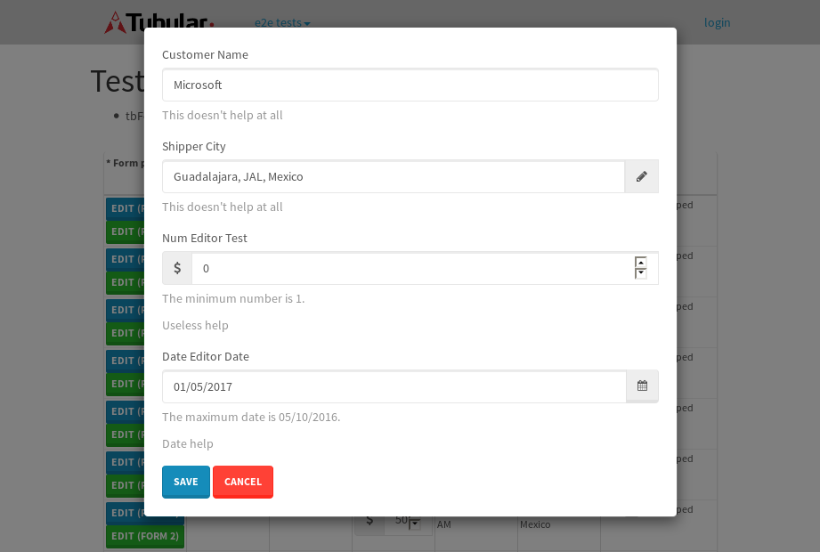
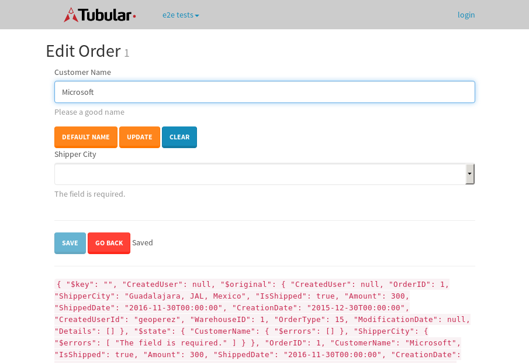

tbColumn.Grid Sorting - 30.318sTests: 5Skipped: 0Failures: 0 should sort data in ascending order then on descending order when sorting by Order Id column - 6.571sTests passed: 100.00%should order data in ascending order when click-sorting an unsorted text column - 5.381sTests passed: 100.00%should order data in descending order when click-sorting an ascending-sorted text column - 6.172sTests passed: 100.00%should order data in ascending order when click-sorting an unsorted date column - 5.715sTests passed: 100.00%should order data in descending order when click-sorting twice an unsorted date column - 6.477sTests passed: 100.00%
tbColumn.Grid Components - 4.139sTests: 3Skipped: 0Failures: 0 should print grid - 1.808s***Skipped***Tests passed: 0%should export grid - 1.163s***Skipped***Tests passed: 0%should show column selector - 1.166sTests passed: 100.00%
tbSingleForm.Form validations - 2.225sTests: 2Skipped: 0Failures: 0 should have an empty required field - 1.302sTests passed: 100.00%should not be able to click on save - 0.923sTests passed: 100.00%
Tubular Filters.tbColumnFilter - 114.074sTests: 12Skipped: 0Failures: 0 should cancel filtering when clicking outside filter-popover - 10.425sTests passed: 100.00%should disable Value text-input for "None" filter - 6.954sTests passed: 100.00%should disable apply button for "None" filter - 6.878sTests passed: 100.00%should decorate popover button when showing data is being filtered for its column - 12.416sTests passed: 100.00%should correctly filter data for the "Equals" filtering option - 8.986sTests passed: 100.00%should correctly filter data for the "Not Equals" filtering option - 9.917sTests passed: 100.00%should correctly filter data for the "Contains" filtering option - 9.065sTests passed: 100.00%should correctly filter data for the "Not Contains" filtering option - 9.367sTests passed: 100.00%should correctly filter data for the "Starts With" filtering option - 7.446sTests passed: 100.00%should correctly filter data for the "Not Starts With" filtering option - 6.939sTests passed: 100.00%should correctly filter data for the "Ends With" filtering option - 7.282sTests passed: 100.00%should correctly filter data for the "Not Ends With" filtering option - 6.983sTests passed: 100.00%
Tubular Filters.tbColumnDateTimeFilter - 143.043sTests: 12Skipped: 0Failures: 0 should cancel filtering when clicking outside filter-popover - 7.802sTests passed: 100.00%should disable Value text-input for "None" filter - 6.621sTests passed: 100.00%should disable apply button for "None" filter - 6.96sTests passed: 100.00%should clear filtering when clicking on Clean button - 18.333sTests passed: 100.00%should decorate popover button when showing data is being filtered for its column - 12.389sTests passed: 100.00%should correctly filter data for the "Equals" filtering option - 7.673sTests passed: 100.00%should correctly filter data for the "Not Equals" filtering option - 7.274sTests passed: 100.00%should correctly filter data for the "Between" filtering option - 13.266sTests passed: 100.00%should correctly filter data for the "Greater-or-equal" filtering option - 13.676sTests passed: 100.00%should corretlly filter data for the "Greater" filtering option - 12.58sTests passed: 100.00%should correctly filter data for the "Less-or-equal" filtering option - 12.446sTests passed: 100.00%should correctly filter data for the "Less" filtering option - 12.603sTests passed: 100.00%
Tubular Filters.tbColumnOptionsFilter - 85.041sTests: 3Skipped: 0Failures: 0 should cancel filtering when clicking outside filter-popover - 9.253sTests passed: 100.00%should decorate popover button when showing data is being filtered for its column - 11.795sTests passed: 100.00%should filter column-elements in accordance to the selected filter when selecting a single option - 51.751sTests passed: 100.00%
Tubular Filters.tbTextSearch - 51.028sTests: 5Skipped: 0Failures: 1 min-chars is not set - 0.911sTests passed: 100.00%should filter data in searchable-column customer name to matching inputted text, starting from 3 characters - 7.183sTests passed: 100.00%should filter data in searchable-column shipper city to matching inputted text, starting from 3 characters - 13.128sTests passed: 100.00%should show clear button when there is inputted text only - 6.795sTests passed: 100.00%should clear filtering when clicking clear button - 17.19sExpected 10 not to be 10.✗Tests passed: 0.00%
tbForm related components.tbCheckboxField - 6.612sTests: 2Skipped: 0Failures: 0 should save changes on "SAVE" - 3.221sTests passed: 100.00%should discard changes on "CANCEL" - 1.901sTests passed: 100.00%
tbForm related components.tbDropDownEditor - 13.682sTests: 5Skipped: 0Failures: 0 should set initial input value to the value of "value" attribute when defined - 2.464sTests passed: 100.00%should show the component name value in a label field when "showLabel" attribute is true - 1.727sTests passed: 100.00%should show a help field equal to this attribute, is present - 1.954sTests passed: 100.00%should submit modifications to item/server when clicking form "Save" - 3.47sTests passed: 100.00%should NOT submit modifications to item/server when clicking form "Cancel" - 3.309sTests passed: 100.00%
tbForm related components.tbTextArea - 18.862sTests: 7Skipped: 0Failures: 0 should set initial input value to the value of "value" attribute when defined - 2.137sTests passed: 100.00%should be invalidated when the number of chars is not in the range of "min" and "max" attributes - 2.385sTests passed: 100.00%should show the component name value in a label field when "showLabel" attribute is true - 2.374sTests passed: 100.00%should show a help field equal to this attribute, is present - 2.092sTests passed: 100.00%should require the field when the attribute "required" is true - 2.118sTests passed: 100.00%should submit modifications to item/server when clicking form "Save" - 4.18sTests passed: 100.00%should NOT submit modifications to item/server when clicking form "Cancel" - 2.593sTests passed: 100.00%
tbForm related components.tbDateEditor - 19.458sTests: 6Skipped: 0Failures: 4 should set initial date value to the value of "value" attribute when defined - 3.094sExpected false to be true.✗Tests passed: 0.00%should be invalidated when the date is not in the range of "min" and "max" attributes - 3.207sExpected false to be true.✗Expected 1 to be less than 1.✗Tests passed: 33.33%should show the component name value in a label field when "showLabel" attribute is true - 2.325sTests passed: 100.00%should show a help field equal to this attribute, is present - 2.906sTests passed: 100.00%should submit modifications to item/server when clicking form "Save" - 3.224sExpected false to be true.✗Tests passed: 0.00%should NOT submit modifications to item/server when clicking form "Cancel" - 3.112sExpected false to be true.✗Tests passed: 0.00%
tbForm related components.tbTypeaheadEditor - 20.294sTests: 7Skipped: 0Failures: 1 should show an options list when there is an API-info/component entered-data - 2.591sTests passed: 100.00%should select the option clicked - 2.292sTests passed: 100.00%should show a "delete" button when an option/match is selected, and delete the option if button is clicked - 2.743sFailed: each key must be a number of string; got boolean✗Tests passed: 50.00%should show a label value equal to the component name when "showLabel" attribue is true - 2.049sTests passed: 100.00%should require a value when "require" attribute is true - 2.48sTests passed: 100.00%should submit modifications to item/server when clicking form "Save" - 4.786sTests passed: 100.00%should NOT submit modifications to item/server when clicking form "Cancel" - 2.473sTests passed: 100.00%
tbForm related components.tbSimpleEditor - 28.22sTests: 9Skipped: 0Failures: 1 should set initial input value to the value of "value" attribute when defined - 2.833sTests passed: 100.00%should be invalidated when the number of chars is not in the range of "min" and "max" attributes - 2.418sTests passed: 100.00%should show the component name value in a label field when "showLabel" attribute is true - 1.773sTests passed: 100.00%should set input placeholder to the value of "placeholder" attribute - 3.02sTests passed: 100.00%should validate the control using the "regex" attribute, if present - 2.035sFailed: each key must be a number of string; got function✗Tests passed: 0.00%should show a help field equal to this attribute, is present - 2.08sTests passed: 100.00%should require the field when the attribute "required" is true - 3.021sTests passed: 100.00%should submit modifications to item/server when clicking form "Save" - 4.072sTests passed: 100.00%should NOT submit modifications to item/server when clicking form "Cancel" - 5.694sTests passed: 100.00%
tbForm related components.tbNumericEditor - 21.517sTests: 7Skipped: 0Failures: 0 should set initial component value to the value of "value" attribute when defined - 2.148sTests passed: 100.00%should be invalidated when the entered number is not in the range of "min" and "max" attributes - 3.047sTests passed: 100.00%should show the component name value in a label field when "showLabel" attribute is true - 2.524sTests passed: 100.00%should show a help field equal to this attribute, is present - 2.609sTests passed: 100.00%should require the field when the attribute "required" is true - 2.443sTests passed: 100.00%should submit modifications to item/server when clicking form "Save" - 4.805sTests passed: 100.00%should NOT submit modifications to item/server when clicking form "Cancel" - 2.839sTests passed: 100.00%
tbForm Connection Error - 3.027sTests: 1Skipped: 0Failures: 0 tbForm connection error functionality - 0.415sTests passed: 100.00%
tbForm Connection Error - 2.569sTests: 1Skipped: 0Failures: 0 tbForm connection error functionality - 0.434sTests passed: 100.00%
tbForm Connection Error - 2.51sTests: 1Skipped: 0Failures: 1 tbForm connection error functionality - 0.548sExpected '' to equal 'No data found'.✗Tests passed: 0.00%
tb Form Date Editor.tbDateEditor - 21.101sTests: 6Skipped: 0Failures: 0 should set initial date value to the value of "value" attribute when defined - 2.435sTests passed: 100.00%should be invalidated when the date is not in the range of "min" and "max" attributes - 3.282sTests passed: 100.00%should show the component name value in a label field when "showLabel" attribute is true - 2.416sTests passed: 100.00%should show a help field equal to this attribute, is present - 2.704sTests passed: 100.00%should submit modifications to item/server when clicking form "Save" - 3.391sTests passed: 100.00%should NOT submit modifications to item/server when clicking form "Cancel" - 4.706sTests passed: 100.00%
tbGridComponents - 9.64sTests: 6Skipped: 0Failures: 0 should add item with newRow method - 2.663sTests passed: 100.00%should add item with newRow method and cancel action - 1.168sTests passed: 100.00%should update item with tbSaveButton - 1.351sTests passed: 100.00%should update item with tbSaveButton and cancel action - 0.984sTests passed: 100.00%should remove item with tbRemoveButton - 1.065sTests passed: 100.00%should remove item with tbRemoveButton and cancel action - 0.819sTests passed: 100.00%
tbGridPager.navigation buttons - 9.218sTests: 1Skipped: 0Failures: 0 should perform no action when clicking on the numbered navigation button corresponding to the current-showing results page - 2.02sTests passed: 100.00%
tbGridPager.navigation buttons.first/non-last results page related functionallity - 3.784sTests: 2Skipped: 0Failures: 0 should disable "first" and "previous" navigation buttons when in first results page - 1.601sTests passed: 100.00%should enable "last" and "next" navigation buttons when in a results page other than last - 2.181sTests passed: 100.00%
tbGridPager.navigation buttons.last/non-first results page related functionallity - 3.413sTests: 2Skipped: 0Failures: 0 should disable "last" and "next" navigation buttons when in last results page - 1.641sTests passed: 100.00%should enable "first" and "previous" navigation buttons when in a results page other than first - 1.772sTests passed: 100.00%
tbGridPager.page navigation - 6.985sTests: 5Skipped: 0Failures: 0 should go to next results page when clicking on next navigation button - 1.597sTests passed: 100.00%should go to previous results page when clicking on previous navigation button - 1.582sTests passed: 100.00%should go to last results page when clicking on last navigation button - 1.199sTests passed: 100.00%should go to first results page when clicking on first navigation button - 1.414sTests passed: 100.00%should go to corresponding results page when clicking on a numbered navigation button - 1.193sTests passed: 100.00%
tbGridPagerInfo - 5.027sTests: 2Skipped: 0Failures: 0 should show text in accordance to numbered of filter rows and current results-page - 1.392sTests passed: 100.00%should show count in footer - 0.595sTests passed: 100.00%
tbHttp - 25.276sTests: 8Skipped: 0Failures: 0 should be authenticated - 3.726sTests passed: 100.00%retrieve data - 2.476sTests passed: 100.00%should not login bad credentials - 2.614sTests passed: 100.00%should have a refresh token - 4.369sTests passed: 100.00%should remove authentication - 2.348sTests passed: 100.00%get method-Is not authenticated - 2.965sTests passed: 100.00%post method-Is not authenticated - 2.96sTests passed: 100.00%should regenerate access token on post - 3.816sTests passed: 100.00%
LocalData.Grid Local Data Sorting - 12.237sTests: 4Skipped: 0Failures: 1 should order data in ascending order when click-sorting an unsorted text column - 4.984sTests passed: 100.00%should order data in descending order when click-sorting an ascending-sorted text column - 2.066sTests passed: 100.00%should correctly filter data for the "Contains" filtering option - 2.174sFailed: Element is not enabled✗Tests passed: 0.00%should correctly filter data for the "Contains" with ENTER key - 3.013sTests passed: 100.00%
OData.Grid OData Sorting - 40.415sTests: 7Skipped: 0Failures: 1 should order data in ascending order when click-sorting an unsorted numeric column - 7.725sTests passed: 100.00%should order data in descending order when click-sorting an ascending-sorted numeric column - 5.597sTests passed: 100.00%should order data in ascending order when click-sorting an unsorted text column - 3.641sTests passed: 100.00%should order data in descending order when click-sorting an ascending-sorted text column - 6.354sTests passed: 100.00%should order data in ascending order when click-sorting an unsorted date column - 5.329sTests passed: 100.00%should order data in descending order when click-sorting an ascending-sorted date column - 8.056sTests passed: 100.00%should correctly filter data for the "Contains" filtering option - 3.71sFailed: Element is not enabled✗Tests passed: 0.00%
tbPageSizeSelctor - 21.861sTests: 4Skipped: 0Failures: 0 should filter up to 10 data rows per page when selecting a page size of "10" - 3.55sTests passed: 100.00%should filter up to 20 data rows per page when selecting a page size of "20" - 3.232sTests passed: 100.00%should filter up to 50 data rows per page when selecting a page size of "50" - 6.021sTests passed: 100.00%should filter up to 100 data rows per page when selecting a page size of "100" - 7.439sTests passed: 100.00%
tbRowSelectable - 14.557sTests: 2Skipped: 0Failures: 0 selected rows - 8.949sTests passed: 100.00%unselected rows - 3.833sTests passed: 100.00%
tbSingleForm.Form fields - 17.891sTests: 7Skipped: 0Failures: 1 should load correct info - 1.18sTests passed: 100.00%should change customer name - 1.011sTests passed: 100.00%should save it - 4.049sFailed: Element is not enabled✗Tests passed: 0.00%should clear the inputs - 1.291sTests passed: 100.00%should update - 1.239sTests passed: 100.00%should reset editor - 4.714sTests passed: 100.00%should not save if not Changes - 4.406sTests passed: 100.00%
tbSingleForm.Form validations - 2.544sTests: 2Skipped: 0Failures: 0 should load correct info - 1.101sTests passed: 100.00%should not be able to click on save - 1.443sTests passed: 100.00%
tubularTemplateServiceModule.#createColumns() - 1.991sTests: 2Skipped: 0Failures: 0 should return an array with 7 elements - 0.939sTests passed: 100.00%first element should match - 1.052sTests passed: 100.00%
tubularTemplateServiceModule.#generateFieldsArray() - 3.424sTests: 2Skipped: 0Failures: 0 should return an array with 7 elements - 2.075sTests passed: 100.00%first element should match - 1.349sTests passed: 100.00%
tubularTemplateServiceModule.#generatePopup() - 0.909sTests: 1Skipped: 0Failures: 0 should html match - 0.909sTests passed: 100.00%
tubularTemplateServiceModule.#getEditorTypeByDateType() - 6.798sTests: 4Skipped: 0Failures: 0 should be tbDateTimeEditor - 0.816sTests passed: 100.00%should be tbNumericEditor - 0.92sTests passed: 100.00%should be tbCheckboxField - 3.741sTests passed: 100.00%should be tbSimpleEditor - 1.321sTests passed: 100.00%
tubularTemplateServiceModule.#generateForm() - 2.527sTests: 3Skipped: 0Failures: 0 should single layout html match - 0.858sTests passed: 100.00%should two columns layout html match - 0.826sTests passed: 100.00%should three columns layout html match - 0.843sTests passed: 100.00%
tubularTemplateServiceModule.#generateCells() - 0.754sTests: 1Skipped: 0Failures: 0 should html match - 0.754sTests passed: 100.00%
tubularTemplateServiceModule.#generateGrid() - 1.145sTests: 1Skipped: 0Failures: 0 should html match - 1.145sTests passed: 100.00%


{kind=link}
{kind=link}